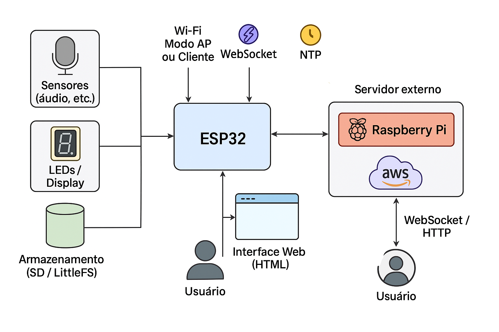

🎧 Inclusão Sonora para Crianças Autistas
O Echo Engine Basic é um dispositivo acessível para monitoramento de sons ambientes, com interface visual local para feedback imediato. Ele foi projetado para uso fixo em salas de aula, promovendo a inclusão de crianças autistas com sensibilidade auditiva.
💡 Características Técnicas
- Interface local com feedback visual
- Armazenamento local das últimas 24h
- Conexão Wi-Fi: modo cliente ou ponto de acesso (AP)
- Interface Web para configuração e monitoramento
- Atualização remota via OTA
- Setup programável conforme o ambiente
- Licença MIT
🔧 Hardware Utilizado
- Microcontroladores: ESP8266, ESP32, RP2040
- Sensores de som acessíveis e de baixo custo
- Componentes disponíveis em mercados locais
☁️ Armazenamento e Pesquisa
Os dados captados são enviados para um servidor na nuvem, com o objetivo de apoiar pesquisas científicas em neurociência e educação inclusiva.
🛠️ Desenvolvimento
- Ambiente: VSCode com PlatformIO
- Foco em baixo custo de fabricação e manutenção
📊 Diagrama de Arquitetura
Visualização dos principais componentes e fluxos de dados do sistema:
🤝 Contribuição
Este projeto está aberto para colaboração! Pesquisadores, educadores e desenvolvedores são bem-vindos.